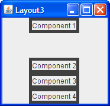
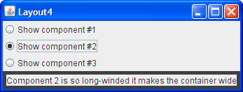

Respuestas: Disponer Componentes Dentro de un Contenedor
Preguntas
En cada una de las siguientes preguntas, elija el gestor de diseño(s) que se ajuste más naturalmente al diseño
descrito. Asuma que el contenedor que controla el gestor de diseño es un JPanel.
Pregunta 1. El contenedor tiene un componente que debe tomar tanto espacio como sea posible

|

|
a. BorderLayout
b. GridLayout
c. GridBagLayout
d. a and b
e. b and c
Respuesta 1: d. BorderLayout y GridLayout manejan facilmente esta situación.
Aunque podría usar GridBagLayout, es mucho más complejo de lo necesario.
Pregunta 2. El contenedor tiene una fila de componentes que serán visualizados con el mismo tamaño, rellenando completamente el área del contenedor.


a. FlowLayout
b. GridLayout
c. BoxLayout
d. a y b
Respuesta 2: b. Este tipo de diseño de mismo-tamaño — ya sea en una fila, una columna, o una
cuadrícula — es lo que GridLayout hace mejor.
Pregunta 3. El contenedor muestra un número de componentes en una columna, donde el espacio extra va
entre los dos primeros componentes.

|
 |
a. FlowLayout
b. BoxLayout
c. GridLayout
d. BorderLayout
Respuesta 3: b. BoxLayout dispone los componentes o en una columna o en una fila. Puede
especificar espacio extra usando un componente invisible.
Pregunta 4. El contenedor puede visualizar tres componentes completamente diferentes en tiempos distintos, dependiendo quizás de la entrada del usuario o el estado del programa. Incluso si los tamaños de los componentes difieren, el cambiar de un componente al siguiente no debería cambiar la cantidad de espacio reservada al componente.


a. SpringLayout
b. BoxLayout
c. CardLayout
d. GridBagLayout
Respuesta 4: c. CardLayout existe para permitir a los componentes compartir el mismo
espacio. Aunque es más simple usar el componente JTabbedPane para controlar un área,
CardLayout es la solución cuando no quiere pestañas.
Ejercicios
Ejercicio 1. Implemente el diseño descrito y mostrado en la pregunta 1.
Respuesta 1: Vea
Layout1.java
 . Aquí tiene el código que implementa el diseño:
. Aquí tiene el código que implementa el diseño:
JPanel p = new JPanel(new BorderLayout());
p.add(createComponent("Component 1"),
BorderLayout.CENTER);
frame.setContentPane(p);
Ejercicio 2. Implemente el diseño descrito y mostrado en la pregunta 2.
Respuesta 2: Vea
Layout2.java
 . Aquí tiene el código que implementa el diseño:
. Aquí tiene el código que implementa el diseño:
JPanel p = new JPanel(new GridLayout(1,0));
p.add(createComponent("Component 1"));
p.add(createComponent("Component 2"));
p.add(createComponent("Component 3"));
p.add(createComponent("Component 4"));
frame.setContentPane(p);
Ejercicio 3. Implemente el diseño descrito y mostrado en la pregunta 3.
Respuesta 3: Vea
Layout3.java
 . Aquí tiene el código que implementa el diseño:
. Aquí tiene el código que implementa el diseño:
JPanel p = new JPanel();
p.setLayout(new BoxLayout(p, BoxLayout.PAGE_AXIS));
p.add(createComponent("Component 1"));
p.add(Box.createVerticalGlue());
p.add(createComponent("Component 2"));
p.add(createComponent("Component 3"));
p.add(createComponent("Component 4"));
frame.setContentPane(p);
Ejercicio 4. Implemente el diseño descrito y mostrado en la pregunta 4.
Respuesta 4: Vea
Layout4.java
 . Aquí tiene el código que implementa el diseño:
. Aquí tiene el código que implementa el diseño:
...//Donde los botones de radio son configurados:
for (int i= 0; i < strings.length; i++) {
...
rb[i].setActionCommand(String.valueOf(i));
...
}
...//Donde el panel que contiene el espacio compartido por los componentes es configurado:
cards = new JPanel(new CardLayout());
for (int i = 0; i < strings.length; i++) {
cards.add(createComponent(strings[i]), String.valueOf(i));
}
...//En el oyente de acción para los botones de radio:
public void actionPerformed(ActionEvent evt) {
CardLayout cl = (CardLayout)(cards.getLayout());
cl.show(cards, (String)evt.getActionCommand());
}
Ejercicio 5. Agregando una única línea de código, haga que el programa que escribió para el Ejercicio 2 muestre los componentes de derecha-a-izquierda, en vez de izquierda-a-derecha.

Respuesta 5: Puede cambiar la orientación horizontal usando el método
setComponentOrientation definido por la clase Component. Por ejemplo:
p.setComponentOrientation(ComponentOrientation.RIGHT_TO_LEFT);